PC Watch
https://pc.watch.impress.co.jp
PC/テクノロジーの最新情報、レポート等でPC業界を先取り
フィード
【今すぐ読みたい！人気記事】Windowsおじさん、MacBookを使ってみる。そして案外代替アプリがあることを知る - PC Watch 1
1
PC Watch
Windows一筋30年の筆者の手元に編集部所有のMacBook Proが届いた。しばらくこれで仕事しろと言われたら実際どうなるのか。今回はそんなお話だ。Mac上級者からすれば「そこは設定でなんとかなるぞ」、「こっちのアプリほうが○○に近いぞ」みたいな助言があるかもしれない。ただまあ、そこは生暖かい目で読んでいただければ幸いだ。
18時間前
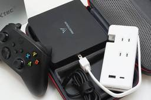
【今すぐ読みたい！人気記事】ミニPCをそのまま使うなんてもったいない！魅力を120%引き出すガジェットたち - PC Watch 2
PC Watch
コンパクトで置き場所に困らない上、低価格なので購入しやすい小型デスクトップPC「ミニPC」。ユーザーからの注目度も高く、最近は1つのジャンルとして定着した感がある。
18時間前
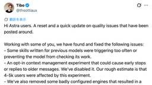
ChatGPTが本日もリセット。OpenAIがGPT-6 Astraの不具合3件を修正 2
PC Watch
「本日もリセットが届く」。OpenAIでCodexとChatGPTを担当するThibault Sottiaux(ティボー・ソティオ)氏が9月12日(日本時間)、Xに投稿した。GPT-6 Astraをめぐって指摘されていた品質問題のうち、3点を修正したという。あわせて、使用量リセットを同日中にもう一度実施すると告知している。投稿に時間帯の明記はないが、日本時間の9月12日16時前後にリセットされると見られる。
19時間前
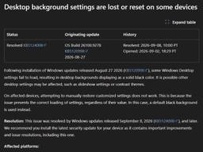
壁紙が真っ黒になるWindows 11の不具合を修正、パッチ提供開始 3
PC Watch
Microsoftは9月8日、Windows Update後に一部のデバイスで発生していた、デスクトップの背景設定が消失してしまう不具合を修正した。
2日前
TCL、紙のように読める11型Androidタブレット「TAB A1 NXTPAPER」 2
PC Watch
紙のような見やすさをうたうTCLのNXTPAPERタブレットに、11型の新モデルが加わった。TCL JAPAN ELECTRONICSは9月11日、11型Androidタブレット「TCL TAB A1 NXTPAPER」と「TCL TAB A1」の2機種を発売した。Amazonでの価格は前者が4万6,800円、後者が3万7,800円。
2日前
GALLERIA、TGS2026出展記念のRTX 5080搭載PC 3機種 1
PC Watch
サードウェーブはGALLERIAブランドから、東京ゲームショウ2026出展記念モデルとなるデスクトップPC 3機種を発売した。価格は54万9,980円から。
2日前
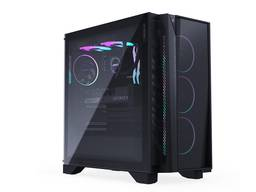
9800X3D+RTX 5080のゲーミングPC、GIGABYTEが量販店で発売 1
PC Watch
Ryzen 7 9800X3DとGeForce RTX 5080(16GB)を組み合わせたハイエンドなゲーミングデスクトップPCが家電量販店の店頭に並ぶ。GIGABYTEは、ゲーミングデスクトップPC「AORUS PRIME 5 AP551(AP5A7N8-5103)」を9月12日に発売する。価格はオープンプライスで、実売予想価格は67万円前後の見込み。
2日前
社内データをチャットで分析、ChatGPT Workに「Data agent」 28
PC Watch
SQLもBIツールの操作も要らない。社内データの分析は「聞くだけ」でいい。チャットを通じて社内データを分析できるChatGPT Workの新機能「Data agent」が公開された。OpenAIが9月10日に発表したもので、ChatGPT Workのプラグイン「Data」を有効化することで利用できる。
2日前
【本日みつけたお買い得品】「翼を授かれる」レッドブル24本入りが1,027円引きでオトク
PC Watch
Amazonでは、9月20日まで飲料特別セールを開催中だ。セールにおいて、レッドブルのエナジードリンク「レッドブル エナジードリンク 250mlx24本」が9月15日まで利用可能なクーポン適用により、現在価格の1,027円引きとなる4,105円で販売されている。1本あたりの価格は約171円。
2日前
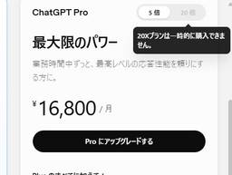
Astra人気でOpenAIが悲鳴！月3万円のChatGPT Pro新規受付を一時停止
3
PC Watch
OpenAIは9月11日(現地時間)、20倍の容量が使える月額200ドル(3万円)の最上位プラン「ChatGPT Pro」の新規サブスクリプション受付を一時的に停止したと発表した。同社でCodexおよびChatGPTプロダクトを担当するTibo氏のX(旧Twitter)投稿により明らかとなったもので、新モデル「Astra」の需要急増に伴い、システムへの負担がかつてない規模に達していることが要因だ。
2日前
GIGABYTE、RTX 50搭載の16型ゲーミングノート「GAMING A16」 1
PC Watch
GIGABYTEは、16型ゲーミングノートPC「GAMING A16」の家電量販店モデル2機種を9月12日から順次発売する。価格はオープンプライス。GPUにGeForce RTX 5060 Laptop GPUを搭載した「EVHS3JP894SP」は9月12日で、実売予想価格は36万円前後、GeForce RTX 5070 Laptop GPUを搭載した「EWHS3JP894SP」は9月後半の発売で、実売予想価格は40万円前後の見込み。
2日前
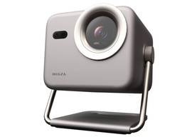
【本日みつけたお買い得品】レグザの4Kプロジェクタが約6万6千円引き！ 1
PC Watch
Amazonにおいて、レグザ(REGZA)ブランドの4Kプロジェクタ「RLC-V5R-S」が直近価格の6万6,100円引きとなる15万3,900円で販売されている。
2日前
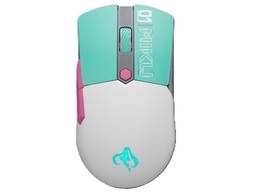
【本日みつけたお買い得品】初音ミクコラボのゲーミングマウスが約1,500円オトク！
PC Watch
Amazonにて、ASUSの「TUF Gaming」ブランドとバーチャルシンガー「初音ミク」がコラボしたワイヤレスゲーミングマウス「ASUS TUF Gaming Mini Wireless Mouse Hatsune Miku Edition」が、直近価格の1,452円引きとなる1万2,236円で販売されている。
2日前
Windows版「Gemini」アプリ登場、Alt+Spaceで即起動 3
PC Watch
WindowsでもブラウザなしでGeminiを呼び出せるようになった。Googleは9月10日(米国時間)、AIアシスタント「Gemini」のWindows向けデスクトップアプリの提供を開始した。Windows 10/11に対応し、x64およびArm64に対応する。
2日前
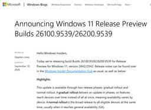
Copilotキー、右Ctrlキーとして使用可能に。Insiderで実装 14
PC Watch
Copilotキーを右Ctrlキーやコンテキストメニューキーとして使えるようになる。Microsoftは9月10日(米国時間)、Windows 11のInsiderのRelease Previewチャネル向けに、Build 26100.9539/26200.9539(KB5124010)を公開した。
2日前
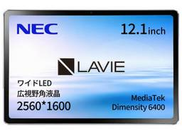
【本日みつけたお買い得品】NEC LAVIEブランドのAndroidタブレットが約8千円オトクに
PC Watch
Amazonにおいて、NECの12.1型Androidタブレット「LAVIE Tab T12 12QHD2」(PC-TAB12Q03)が、直近価格の8,580円引きとなる5万2,800円で販売されている。8月22日頃からも割引価格で販売されていたが、今回さらに価格を下げる形となっている。
2日前
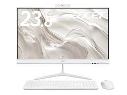
Web会議もこれ1台。Ryzen搭載の23.8型一体型PC「Aspire C 24」 1
PC Watch
ひょっこり現れるWebカメラで、Web会議もこなせる一体型。日本エイサーは9月10日、23.8型の液晶一体型デスクトップPC「Aspire C 24」4機種を発売した。直販価格は16万8,000円から。
2日前
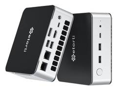
【本日みつけたお買い得品】Ryzen 7搭載ミニPCがクーポン適用で1万2千円引き 1
PC Watch
Amazonにおいて、GetorliのミニPC「GT106」が9月30日までのクーポン適用により、現在の価格から1万2,000円引きとなる6万7,998円で販売中だ。
2日前
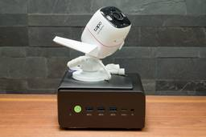
AIに丸投げしたら1日でできた。ミニPCで作る「サブスク不要」のAI監視カメラ
76
PC Watch
近頃は高機能なネットワークカメラがリーズナブルに入手でき、AIで人やクルマなどを検知するような機能も標準的に備えている。購入して設置したら、それだけでもうAIカメラ監視システムの完成だ。
2日前